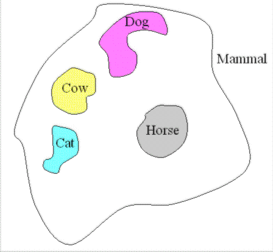

See also SADL Xtext Grammar.
The Semantic Application Design Language (SADL) has been developed to provide a more intuitive language and authoring environment for developing models using Semantic Web technology and more especially the Web Ontology Language (OWL) and associated rule languages such as the Semantic Web Rule Language (SWRL) and Jena Rules. This document describes the constructs available in SADL for building models. It is meant to explain the design of the SADL language and to provide a detailed description of what can be said in SADL along with its translation into OWL. For an introduction to the underlying concepts of semantic modeling, please see Semantic Modeling Using SADL.
SADL is a controlled English language for expressing models with an unambiguous mapping to OWL. Its purpose is to provide an authoring and testing/validation environment that is friendly to subject matter experts (SMEs) who are not expert in OWL and semantic technology. SADL provides several things useful to SMEs:
In the examples in this section we will use SADL coloring of terms and will use the standard convention of capitalization in OWL.
Keywords in the language are dark magenta, e.g., describes. SADL models are made of statements, and each statement ends with a period. A statement may be on multiple lines; multiple statements may be on one line. White space is not significant so statements may be preceded with spaces or tabs to improve grouping and readability.
In SADL, a class is a set and we can define top-level classes (classes not specified as subclasses (subsets) of any other class).
Person
is a top-level class.
or just
Person
is a class.
In SADL, we use the "is a type of" to state the subset relationship for both classes and properties.
Student is a type of Person. // translates to rdfs:subClassOf
lectures is a type of teaches. // translates to rdfs:subPropertyOf
Grouping of statements is supported in SADL to facilitate more succinct and readable models. For example, rather than make four separate "is a type of" statements, one can say in SADL:
{
Dog, Cat, Cow, Horse} are types of Mammal. //each subclass name translates to an rdfs:subClassOf statement
This is exactly equivalent to the four separate statements. All it says is that every member of each of the subclasses (Dog, Cat, Cow, Horse) is also a member of the superclass (Mammal). Note that this does not tell us anything about whether Dog, Cat, Cow, and Horse have any common members. Either of the Venn Diagrams below are consistent with this statement (as would many other interpretations).
|
|
 |
| Both Diagrams Are Consistent with the Statement " {Dog, Cat, Cow, Horse} are types of Mammal." | |
Now consider the statement below.
Bicycle
is a type of {Vehicle, SportsEquipment}. // Bicycle is a subclass of Vehicle and is a subclass of SportsEquipmentThe Venn Diagram below depicts an interpretation of this situation. Note that since every instance of a Bicycle must also be both an instance of a Vehicle and an instance of a SportsEquipment, unless Bicycle is the empty set (no Bicycle can exist), Vehicle and SportsEquipment must intersect (have members in common). Note that this statement does not say that every member of the intersection of Vehicle and SportsEquipment is a Bicycle.
 |
| Venn Diagram for the Statement "Bicycle is a type of {Vehicle, SportsEquipment}." |
When names of classes are grouped in SADL by putting them in curley brackets, the exact meaning depends on the context and the connective between the names within the group. Besides the comma connective used above, "and" and "or" may be used to explicitly indicate the set operation on the connected classes. An "and" indicates an intersection. For example, "{Person and Female}" means the intersection of the Person class and the Female class. In other words, the set of all instances that are both of type Person and of type Female. Note that in the second example above, "Bicycle is a type of {Vehicle, SportsEquipment}.", we interpreted the statement as saying that Bicycle is a subclass of Vehicle AND Bicycle is a subclass of SportsEquipment. Therefore the statement is equivalent to "Bicycle is a type of {Vehicle and SportsEquipment}."
An "or" connective within a grouping of class names indicates the "union" set operation. For example, "{Food or Drink}" means the union of the Food class and the Drink class--all of the instances that are of type Food plus all of the instances that are of type Drink. In the first example above ("{Dog, Cat, Cow, Horse} are types of Mammal."), the interpretation is that of a union. The statement is equivalent to, "{Dog or Cat or Cow or Horse} are types of Mammal." However, it is probably more intuitive for most people to write this statement with commas and think of it as a shorthand for four subclass statements so SADL will use this form. (The statement with the "or" connectives is not allowed syntax in SADL.)
The domain and/or range of a property can be specified as part of the description of a class or they can be specified as a separate statement describing the property.
Circle is a type of Shape, described by radius with values of type float. // Circle (domain) --> radius --> float (range); part of definition of Circle
radius describes Circle with values of type float. // Circle (domain) --> radius --> float (range); Circle defined elsewhere
gender describes Person with a single value of type Gender. // Person (domain) --> gender --> Gender (range); Person and Gender defined elsewhere (gender of a Person can only have at most one value, discussed below)
Sometimes it makes more sense to say something like:
relationship of Professor to Student is teaches. // Professor (domain) --> teaches --> Student (range); Professor and Student defined elsewhere
In all of these examples, it is very important to be able to differentiate between the domain and the range--to be clear on the direction of the relationship. This is shown in the comment after each statement.
Grouping may be used in property definitions in various ways.
Circle is a type of Shape,
described by radius with values of type float,
described by area with values of type float. // Circle is the domain of the two properties, radius and area, each of which has a range of floatarea describes {Circle or Rectangle} with values of type float. // The domain of the area property is the union of Circle and Rectangle
conveyance
describes Journey with values of type {Car or Bus or Plane}. // The range of conveyance is the union of Car, Bus, and Plane
relationship
of {Professor or Teacher} to {Student or Pupil} is teaches. // The domain of teaches is the union of Professor and Teacher, the range is the union of Student and Pupil
When a property's domain or range is specified in separate statements to be different classes, it is interpreted as meaning that the domain or range is the union of those classes. For example, the last statement above is equivalent to the following two statements:
relationship of Professor to Student is teaches.
relationship of Teacher to Pupil is teaches.
Note that there are two types of properties in OWL. A property that can have primitive XML data type values, e.g., int, float, string, date, etc., is called a DatatypeProperty. A property that can have an instance of a defined class as a value is called an ObjectProperty. In the examples above, radius is a DatatypeProperty while gender is an ObjectProperty. SADL allows the range of a property to be given the value "data", which simply identifies the property as a DatatypeProperty without giving it a range. A property with no range is assumed to be an ObjectProperty. Note that there is no way in SADL to define a property without giving it at least a domain or a range (well, annotation properties excepted). Note also that these two types of properties (DatatypeProperty and ObjectProperty) cannot be both present in the same sub-property/super-property hierarchy. In other words, a property of one type cannot be a sub property of a property of the other type.
We use "is a" (or "is an") to state that an instance belongs to a particular class.
George is a Student.
Feely
is an Octopus.
Alternatively, the class may be given first:
A
Person George.
Using the RDF terminology, a statement is called a triple and consists of a subject, a predicate, and an object or value. Specification of property values for instances in a model is one form of triple. SADL tries to make such statements more English-like by allowing some connective words and by allowing combining of phrases with, for example, the same subject. This section discusses the various way of stating a-box property value triples.
Sometimes it seems normal in English to precede the property name with "has" when making a triple statement. For example:
MyPlate is a Circle, has radius 9.5.
YourPlate
is a Circle with radius 10.5. // this is equivalent and sometimes sounds more naturalJane is a Student, has age19, has gender Female. // This type of grouping allows the various property values of a subject instance to be listed together
A
Person Marge has child Jane, has age 43 .
In other situations it does not work so well. For example:
Socrates is a Professor, has teaches Plato. // This doesn't sound quite right; teaches is an active verb rather than a noun-role property like age and gender
It is much more natural to say:
Socrates is a Professor, teaches Plato. // This sounds more normal
Note that this difficulty corresponds with the t-box in that we did not say "teaches describes Professor with values of type Student." Teaches is an active (as opposed to passive) verb and takes a direct object. The property names that conformed well to our "has <property>" format were not active verbs. Rather they were nouns describing the role that the object plays relative to the subject. Using a noun-role property name, we can reasonably follow the same form as the first examples:
Professor is a top-level class, described by student with values of type Student.
Socrates is a Professor, has student Plato.
Besides the noun-role and the active verb formats, there are two additional ways to express a triple statement in SADL. In these formats an optional "a" or "an" for a multi-valued property or an optional "the" for a single-valued property may be placed in the statement to make it sound more like natural language. This optional connective can start with an upper-case letter as would be expected at the beginning of a statement.
9.5 is radius of MyPlate. // This puts the value first and the subject last
radius of MyPlate is 9.5 . // This puts the property first
Note that these could also be stated as:
9.5 is the radius of MyPlate.
The radius of MyPlate is 9.5 .
Female is gender of Jane. // Value first for an instance value
gender of Jane is Female. // Property first for an instance value
or
Female
is the gender of Jane. // Value first for an instance valueThe
gender of Jane is Female. // Property first for an instance valuePlato is teaches of Socrates. // Well, this doesn't sound so clear...
teaches of Socrates is Plato. // Nor this, but it is legal
Plato is student of Socrates.
student of Socrates is Plato.
or
Plato
is a student of Socrates.A student of Socrates is Plato.
Once again, these wordings work better for noun-role property names than for active verb property names. Note also that they do not permit the expression of several properties of a single subject together. These syntaxes are more often used in rules and queries, as described in subsequent sections.
In summary, there are four forms for expressing triples in SADL.
The alternate syntaxes of 2 can be mixed as in: Socrates teaches Plato, has age 49 .
Many of the instance nodes in our a-box (instance data), for example declared in test case models, will not have explicit names unless we are forced to create them. Nodes that do not have a specified name (URI) are called blank nodes or bnodes. While computer systems will assign a unique identifier to a bnode for efficiency of reference, we identify them by one or more relationships to named nodes in their local subgraph. In SADL Version 1 a declared instance had to be given a name. In SADL Version 2 it is possible to specify instance data without having to generate unwanted names. This is done by using a syntax for specifying the local sub graph just as one would in a natural language. For example, in English we might say, "Mary gave birth to George at Pope's Creek Estate (near Colonial Beach, VA, 38.186111 lat, -76.930556 long) on 2-22-1732." The equivalent in SADL is:
A
Birth
with
child
George,
with
birthMother
Mary,
with
location (a
Location
with
latitude 38.186111,
with
longitude
-76.930556,
with
description "Pope's
Creek Estate near present-day Colonial Beach, Virginia, USA"),
with
when "1732-02-22".
The delimiters (parentheses) are needed to disambiguate the properties of the nested bnode (a Location) from other properties of the containing instance (a Birth). This delimiting is useful to human readers as well as to the SADL language parser.
In the previous sections we have seen how to make statements (express triples) in SADL, including the creation of blank instance nodes when desired. Making statements allows us to put information into a model. However, sometimes we want to get information out of or reference information in an existing model. This is essential for the following desired functions:
Remember that a triple consists of three parts: a <subject>, a <predicate>, and an <object>. Using the instance data in the previous sections and leaving out, for the moment, optional connectives, the following are examples of triples:
Socrates teaches Plato
MyPlate radius 9.5
Suppose that we left one or more parts of a triple "unspecified"--we'll use a question mark for the moment to indicate the missing element(s) of the triple. Here are some examples and what they mean:
Socrates teaches ? -- Socrates teaches whom? (match all the triples with subject Socrates and predicate teaches)
MyPlate radius ? -- what is the radus of MyPlate? (match all the triples with subject MyPlate and predicate radius)
? teaches Plato -- who teaches Plato? (match all of the triples with predicate teaches and object Plato)
MyPlate ? ? -- what are the properties of MyPlate and their values? (match all the triples with subject MyPlate)
? ? ? -- tell me everything (match all of the triples in the model)
The question mark works ok to indicate something which is not specified (unbound) for a single unspecified element of a triple pattern, but suppose that we have multiple triple patterns where we want to link the results of matching one pattern with the results of matching another? For example, suppose that we wanted to know the ages of all of those that Socrates teaches?
Socrates teaches ? , ? age ?
For each triple that matches the first pattern, we wish to use the object value as the subject of the second pattern. One solution is to introduce the concept of a named variable. (One could think of the question mark as an unnamed variable.) Then our pattern becomes:
Socrates teaches x , x age ?
In SADL variables are colored pink. A question mark isn't a legal character so we we also give the second variable a name, making the statement something like:
Socrates teaches x , x age y
While sometimes named variables are necessary so that we can make explicit the results of matching a pattern, there are times when we can eliminate variables by nesting triple patterns together. To facilitate expressing patterns without using variables, we will reuse a SADL phrase from declaring instance data with bnodes. Just as we used the syntax "a <ClassName>" to represent an unnamed instance of the class in the instance data declaration above, we can use it to represent an unnamed node (bnode) in a triple pattern. For example:
the latitude of the location of a Birth with child George
is an unambiguous reference to the floating point number 38.186111 if applied to the instance data above. This is equivalent to, using variables:
x is a Birth , x child George, x location y , y latitude z
Note that the original expression above assumes, by the use of the definite article "the", that the properties latitude and location are single-valued. If not, it might be stated as:
a latitude of a location of a Birth with child George
Note also that there are several optional connectives in this pattern--it could be expressed simply as:
latitude of location of a Birth with child George
These SADL patterns use two kinds of nesting. The first kind uses the keyword "of" and is of the form (see Statements in the A-Box above):
<property> of <subject>
This pattern allows us to "walk the graph" in the backward direction (see figure below), e.g.:
latitude of location of a Birth
The second nesting pattern uses the keyword "with" and is of the form:
<subject> with <property>
This pattern allows us to "walk the graph" in the forward direction, e.g.:
a Birth with child George
or
a Birth with location with latitude 38.186111
The graph in the figure above has two unlabeled nodes. If this graph is a representation of instance data then these two nodes can be bnodes as described in the previous section. If this graph is a graph pattern to be matched, the nodes can be thought of as unbound or unspecified nodes or variable nodes. When used as a pattern, the matching subgraph is "pinned" to the instance node "George", to the class node "Birth", and to the value 38.186111. In addition, all of the edges of the pattern are specified.
The two nesting patterns can be combined to create a graph pattern containing both. For example, this pattern would be matched by all of the people in our model who were born at latitude 38.186111:
child of a Birth with location with latitude 38.186111
The graph pattern in the figure above further constrains the results by specifying a specific value of the child property. How would we express this pattern in SADL? Like this?
a Birth with location with latitude 38.186111 with child George
The SADL language parser will interpret this to mean that the matching instance of the object of "location" is the subject of the property "child" and, of course, this doesn't match the model or the data. The subject of with phrase (e.g., "with child") is assumed to be the object of the first preceding with phrase having no specified object--the object of "with location" in this case. This is not what we want as "child" has domain Birth. We modify the statement to make it what we intend with the use of parentheses just as we did in the declaration of instance data. The pattern becomes:
a Birth (with location with latitude 38.186111) with child George
Now it is clear that "with child George" modifies "a Birth".
Consider this pattern:
a Birth with location with latitude 38.186111 with child with spouse Martha
Here we have two with clauses that have a specified object value, e.g., "latitude 38.186111" and "spouse Martha". It is clear that "with spouse Martha" must provide the object of "with child" as otherwise it would have no object value. However, it is still unclear whether the subject of the "with child" pattern is the Birth or the Location. Again we obtain the intended meaning with the use of parentheses. The pattern becomes:
a Birth (with location with latitude 38.186111) with child with spouse Martha
As another example of nesting, this pattern identifies the ages of the spouses of all of the people born at latitude 38.186111:
age of a spouse of a child of a Birth with location with latitude 38.186111
As we'll see in the following sections, we can add comparisons and other operations between graph patterns. This pattern would identify elephants with the same age as those identified by the previous pattern:
an Elephant with age == age of a spouse of a child of a Birth with location with latitude 38.186111
A rule is of the form "Rule <name><optional :> given <set of conditions> if <set of conditions> then <set of conclusions>. For example, the rule below essentially defines the meaning of the "grandChild" property in terms of the "child" property. While the "grandChild" property and its domain and range will have been defined previously in the t-box of the model, the rule allows the actual triples in the a-box containing this property to be inferred from known "child" relationships.
Rule
GrandChild_Rule
given x is a Person
if x has child y and y has child z
then x has grandChild z.
The rule's conditions are also called the premises. In SADL, the premises can be stated in the "given" block or in the "if" block, but the division is arbitrary and exists only to make the rule more readable. Only one premise block is required. Note that a SADL rule has a name which should be unique within a given model.
The premises of a rule specify a pattern to be matched. This pattern may be expressed in the form of triples as in the given block in the rule above. What is different in these triples is the use of a "variable": "x", "y", and "z" are variables, colored pink in SADL. A variable is a placeholder or a wild card. A premise statement of this type with a variable is a triple pattern to be matched in the model. The statement "x is a Person" means find all of the instances of Person in the a-box. All of the matching instances, e.g., all of the instances of Person, are said to be "bound" to the variable.
Note that in the example rule, x is constrained to be instances of Person but y and z are not. This makes sense if an instance of Person can only have a "child" which is an instance of Person. Certainly the pattern "y is a Person and z is a Person" could be added to the given block. Note that a rule that starts with such a declaration of "x", "y", and "z" may not be very efficient because it will have to bind each of the variables to all of the instances of Person. If the domain and range of "child" is Person, the type declarations may be unnecessary and the and the rule can simply be stated as:
Rule
GrandChild_Rule
if x has child y and y has child z
then x has grandChild z.
Using the nesting concepts discussed in the previous section, we could eliminate the intermediate variable and just say:
Rule
GrandChild_Rule
if z is a child of a child of x
then z is a grandChild of x.
Proper specification of a rule requires, of course, an understanding of the domain model upon which the rule is built. SADL Version 2 has a reasoner-specific translator which can embed rule engine knowledge to generate efficient rules. For example, if the first rule above were expressed in SADL and the domain and range of "child" is Person, the translator might drop the costly bindings of the variables to all instances of Person.
The conclusions of a rule specify one or more new triples to be created in the a-box model if the premises are satisfied. The example rule above states that a new triple should be added of the form "x --> grandChild --> z" for each binding of x and z. The statement in the then block can have any of the forms described above for triples in the a-box. It could be any of:
Similarly, the statements in the if block can have any of the forms described above for triples in the a-box. The first statement in the example rule if block can be any of:
As noted above, graph pattern forms that use "of" are particularly useful in rules because they allow for a nesting of triples inside triples and an elimination of variables so that the rule reads much more succinctly, more like a formula. For example, consider these two forms of a rule to calculate the area of a Rectangle:
Rule AreaOfRectangle
given x is any Rectangle
if h is height of x
w is width of x
p= h* w
then area of x is p.Rule AreaOfRectangle2
if x is any Rectangle
then area of x is height of x * width of x.
As another example, the grandchild rule from above might be written as:
Rule GrandChild_Rule
if x is a Person
then a child of a child of x is a grandChild of x .
Note that in SADL Version 2, "is", "=", and "==" are aliases for the same operator in triple patterns. In a rule conclusion, "is" in a statement where an assignment is being made (a conclusion) should be read as "is equal to". In a statement where a comparison is being made (in the premise), "is" should be read "is equivalent to". To illustrate, consider this traffic rule:
Rule Rule_Go
given x is a Vehicle
y is a TrafficLight
if x is approaching of y
color of y == Green
then action of x = Go.
Using the nesting patterns described in the previous section, this rule might also be written as:
Rule Rule_Go: given x is a Vehicle if color of a TrafficLight with approaching x is Green then action of x is Go.
Note that a rule need not be spread across multiple lines. The grandchild rule could just as well be written as:
Rule GrandChild_Rule: given x is a Person and y is a Person; if y is a child of x and z is a child of y; then z is a grandChild of x . // note addition of optional colon after the rule name for readability
Note: rule elements must be separated by \n, ",", or "and". (a newline, a comma, or an "and").
SADL has three additional keywords related to various forms of negation and specific OWL constructs that map to built-ins (at least in Jena) and are available in rules. They are "not", "only", and "known". For example, these might appear in rule premises:
Lassie is not a Person // passes if Lassie belongs to the owl:complimentOf Person (see below)
the spouse of Tarzan is only Jane // passes only if the only triple with Tarzan as subject and spouse as predicate has Jane as object value
the spouse of Tarzan is not only Jane // passes only if there is at least one triple with subject Tarzan, predicate spouse, and object value not the same as Jane
the age of William is known // passes if there is any triple with William as subject and age as predicate
the age of Susan is not known // passes if there is not a triple in the model with Susan as subject and age as predicate
Tests can have two forms. The first is a triple, or combination of triples, and can be any of the syntaxes defined above.
Test: MyRect has width 5.0, has area 15.75 . // Grouping of properties and their values with a single subject is also valid in tests
Test: MyRect area 15.75 .
Test: area of MyRect is 15.75 . // or Test: the area of MyRect is 15.75.
Test: 15.75 is area of MyRect. // or Test: 15.75 is the area of MyRect.
Tests of instance data containing bnodes can use the nested triple patterns described above. For example, referring to the instance data with bnodes used previously, one might write the following:
Test: the latitude of the location of a Birth with child George is 38.186111 .
The article "the" in front of "latitude" and "location" are optional.
As another example,
Test: the age of the parent of Susan is 45 .
One side of a test may be specified in terms of a SPARQL query, in which case the results may be a table of values-- one or more rows with each row containing one or more values. A table of values in SADL is expressed using comma-separated values inside square brackets to indicate a row and comma-separated rows inside curly brackets to indicate multiple rows. (The comas between rows are optional.) Note that the additional keywords "not", "only", and "known" may be used with the suggested meaning. The examples below use strict SPARQL syntax with the query in quotes. The tests could also use the SADL query syntax discussed below, in which case the query would not be in quotes.
Test: "select ?s where {<Tom> <spouse> ?s}" is Betty.
Test: "select ?p ?yrs where {?p <rdf:type> <Person> . ?p <age> ?yrs}" == { [ Tom, 35 ] } . // since there is only one row, the curly brackets are optional
Test: "select ?p ?n where {?p <rdf:type> <Person> . ?p <name> ?n}" == { [ Tom, "Tom Dunham"], [ Betty, "Betty Dunham"] }.
Test: "select ?s where {<Tom> <spouse> ?s}" is only Betty.
Test: "select ?y where {<Tom> <age> ?y}" is not 40 .
Test: "select ?y where {<Betty> <age> ?y}" is not known.
SPARQL is the W3C graph query language normally used to retrieve information from a semantic model. A SPARQL query is fundamentally a graph pattern specified as triple patterns to be matched in the data. Variables in the query serve two functions. First, they are used after the "select" to identify which information is to be returned by the query. Second, they provide constraints between triple patterns allowing combination of triples to form a complex graph pattern.
Since a set of rule premises is also a graph pattern, SADL already has most of the syntax necessary to provide a query language. Retaining the "select" and "where" query keywords, and expressing variables without the SPARQL-style question mark, we have the beginnings of a SADL query language.
Suppose that we wished to retrieve a list of all of the instances of Person who have grandchildren, along with the instances of Person who are the grandchildren. In SADL queries are preceded by the "Ask:" keyword. Raw SPARQL queries are placed in double quotes. The question we wish to ask can be expressed as:
"select ?gp ?gc where {?gp <rdf:type> <Person> . <?gp <hasChild> ?c . ?c <hasChild> ?gc}".Ask:
The SADL query equivalent to the SPARQL query above is:
select gp gc where gp is a Person and gp has child c and c has child gc.Ask:
This illustrates one of the advantages of a SADL query: the query is parsed and color coded and errors will be found when the query is entered whereas the SPARQL query is opaque and any errors in the query will not be found until it is executed.
Using some of the alternate triple syntaxes discussed above, we could also say:
Ask: select gp gc where gp is a Person and c is a child of gp and gc is a child of c.
or:
Ask: select gp gc where gp is a Person and a child of gp is c and a child of c is gc.
or:
select gp, gc where gp is a Person and gc is a child of a child of gp.Ask:
The last example illustrates that variables can be separated by a comma if desired.
One of the useful features of SPARQL is the ability to do unions of query results. For example, in SPARQL one might select all of the instances of Woman over 40 and of Man over 50 with this query:
"select ?p ?y where {{?p <rdf:type> <Woman> . ?p <age> ?y . FILTER(?y > 40)} UNION {?p <rdf:type> <Man> . ?p <age> ?y . FILTER(?y > 50)}}".Ask:
In SADL the equivalent is:
select p y where p is a Woman and the age of p > 40 or p is a Man and the age of p > 50 .Ask:
Note (1/13/2011): the Jena translator in the current release of SADL V2 does not yet translate a query with "or" into SPARQL so this query will not yet actually work.
If desired, the elements of the union can be enclosed in parentheses to make the meaning clearer.
select p y where (p is a Woman and the age of p > 40) or (p is a Man and the age of p > 50).Ask:
Finally, using the bnode implicit reference pattern we might query for the latitude where George was born as follows:
Ask:
select l where l is the latitude of the location of a Birth with child George.
In many instances, the "select ... where" may be dropped from the SADL query, making the variables implicit. For example, this query will return the same results as the query above:
Ask: latitude of the location of a Birth with child George
Note that the SADL-IDE allows ad hoc queries to be executed via a popup menu obtained by right-clicking on the model file name in the Project Explorer or by the key press Alt-Shift-R with the focus on the editor window. Queries entered in the resulting dialog box may be SADL queries or SPARQL queries.
SPARQL queries are very much like a set of rule premises in that they are a graph pattern to be matched against the model. The "where" clause of a query is, in essence, a rule premise. Something more or less equivalent to the rules' built-in functions are available in the SPARQL query FILTER. In fact, user-supplied functions are allowed by the Jena ARQ query engine. The SPARQL "select" query begins with the phrase "select ?x ?y ?z ... where ...". The list of variables after the select and before the where simply identifies which variable bindings from the graph pattern are to be returned by the query and in what order. As noted, the where is followed by the graph pattern to be matched.
The SADL test has as its purpose to return one or more values by graph pattern matching and compare this value or values to explicitly specified values or possibly to the values returned by another matching graph pattern.. The more general form of Test (see Tests above) can use a SPARQL query or a SADL query as the left-hand side of a comparison and a value, a list of values, a table of values, or another query as the right-hand side of the comparison. The simple or shorthand test notation gives a set of one or more edges (a graph pattern without any variables--really a SADL query without the variables specified) and the test passes if the pattern is found in the model. Any simple test pattern can be converted into a query test format. For example:
Test: MyRect has width 5.0, has area 15.75 . // means (SADL syntax) Test: select x, y where MyRect width x and MyRect area y is [4.5, 15.75].
Test: the latitude of the location of a Birth with child George is 38.186111 . // means (SPARQL syntax) Test: "select ?x where {?y <rdf:type> <Birth> . ?y <child> <George> . ?y <location> ?z . ?z <latitude> ?x }" is 38.186111 .
Test: the age of the parent of Susan is 45 . // means (SPARQL syntax) Test: "select ?x where {<Susan> <parent> ?y . ?y <age> ?x}" is 45 .
Test:
a child of a Birth with birthMother Mary = the spouse of Martha. // here both sides of the test are graph patterns
Using syntax from the SADL query language, it is possible to formulate much
more complex tests over more complex subgraphs. However, the SADL query language
does not have the full expressivity of SPARQL. For example, it does not support
OPTIONAL patterns. When required, queries can always be expressed as quoted
SPARQL query strings in SPARQL syntax.
In this section we give some additional graph pattern examples.
Rule R23: if x is a Birth with (location with latitude 38.186111) with child with spouse Martha then print ("This is an important date:", when of x).
Ask: select b, d where b is a Birth with (location with latitude 38.186111) with child with spouse Martha and d is when of b .
Ask: select c, d, t, s where b is a Birth with (location with latitude t) with child c with spouse s and d is when of b .
Test: the when of a Birth (with location with latitude 38.186111) with child with spouse Martha is "1732-02-22".
Test: select n, d where b is a Birth (with location with latitude 38.186111) (with child n with spouse Martha) and d is when of b is [George, "1732-02-22"].a Birth (with location with latitude 38.186111) with child George with mother Mary . // this pretty fully constrains the match to a single Birth
a Birth (with location with latitude 38.186111) with child (a Person with spouse Martha) with mother Mary .
a Birth (with location with latitude 38.186111) with child George with mother Mary with weight 10
I
Birth (with location with latitude == latitude of Philadelphia) (with child George with mother == mother of a Birth with child Samuel) with weight == weight of a Birth with child Ruby.a
This pattern tries to identify an instance of Birth at a location with the same latitude as the latitude of Philadelphia (an instance of location), with George a child of the Birth, with a mother who is the same Woman as the mother of a Birth with child Samuel, and with a weight of the Birth which is the same as the weight of a Birth with child Ruby. The graph pattern looks like this.
where the unlabeled nodes represent implied variables and the yellow node represents the implicit subject <s> of the pattern--the instances of Birth that match the pattern.
OWL permits one to say a number of additional kinds of things. While the additional expressiveness of OWL can be very powerful, it comes with a cost. For large models, the performance payment for added levels of reasoning can be significant. However, the SADL [V2] language includes these constructs and when appropriately used they can be very powerful both in model validation and in inferring conclusions. In general, the constructs in this section will need enablement of some level of OWL reasoning to have the expected effect on inferences. The constructs may also be used in the model, then queried, even if OWL reasoning is not enabled.
While the triple of the a-box is the way that most information about an instance is specified, there are other important OWL mechanisms for saying things about instances.
Bill_Clinton is the same as William_Jefferson_Clinton. // owl:sameAs. This means that the two named instances are really the same thing in the modeled world (new in SADL 2)
Hillary_Clinton is not the same as William_Jefferson_Clinton. // owl:differentFrom. This means that the two named instances are not the same thing in the modeled world (new in SADL 2)
{Chelsea_Clinton, Hillary_Clinton, Bill_Clinton} are not the same. // owl:allDifferent. This means that the list of named instances all refer to different things in the modeled world (new in SADL 2)
{Chelsea_Clinton, Hillary_Clinton, Bill_Clinton} are unique. // owl:allDifferent: mg-prefers this form (con: looses "balance" of same/not same
Besides the specification of an OWL property type (DatatypeProperty or ObjectProperty) and the domain and range of the property, here are a few other OWL constructs of interest with their SADL syntax.
spouse has a single value. // owl:FunctionalProperty. This means that there can only be one triple in the model with this property for a given subject.
// (Assuming domain and range are Person, an instance of Person can only have one spouse.) (new in SADL 2)biologicalMotherOf has a single subject. // owl:InverseFunctionalProperty. This means that there can only be one triple in the model with this property for a given object value..
// (Assuming domain and range are Person, an instance of Person can only have one mother.) (new in SADL 2)spouse
is symmetrical. // owl:SymmetricProperty. This means that A --> spouse -->B implies that B --> spouse --> A is also true. (new in SADL 2)descendant is transitive. // owl:TransitiveProperty. This means that A --> descendant -->B and b --> descendant --> C implies that A --> descendant --> C is also true. (new in SADL 2)
wife is the inverse of husband. // owl:inverseOf. This means that A --> wife -->B implies that B --> husband --> A is also true. (new in SADL 2)
hammer is the same as pound. // owl:equivalentProperty. This means that hammer and pound have exactly the same set of possible values (those things you can hammer you can also pound);
// it does not mean that they are the same concept. (new in SADL 2)
Note that these additional property definitional statements can be combined with some property declarations. For example:
spouse
describes Person with a single value of type Person, is symmetrical. // spouse of Person can have at most one value, spouse is symmetrical
spouse describes Person with values of type Person, is symmetrical, has a single value. // spouse is symmetrical, is a functional property (can only have a single value, regardless of the subject)ancestor
describes Person with values of type Person, is transitive.biologicalMotherOf
describes Person with values of type Person, has a single subject.
A class may be defining by enumeration:
Season is a top-level class, must be one of {Spring, Summer, Fall, Winter}. // The class Season consists of exactly the four named instances of the class.
Note that an enumeration may also be used to define a subclass:
MammalGender is a type of Gender, must be one of {Male, Female}. // The class MammalGender is a subclass of Gender and consists of exactly the two named instances of the class.
// (from this we can infer that Male and Female are also members of the class Gender)
Enumeration is a concept that will be encountered again in later sections. In these two instances, the enumerated class is given a name. The actual enumeration of a class in SADL is accomplished with "one of" followed by a grouping of instances.
one of {Spring, Summer, Fall, Winter} // This defines an unnamed class that consists of exactly the four named instances; it is not a legal statement by itself
Equivalent classes are two classes that have the same members, expressed in OWL with owl:equivalentClass. This is usually used to relate classes in different namespaces by specifying that they mean the same thing (have the same extension). In SADL we use the same syntax as for equivalent properties and same instances.
US_President is the same as PrincipalResidentOfWhiteHouse. // (new in SADL 2)
Necessary and sufficient conditions (a particular use of owl:equivalentClass) can be expressed with a statement of the form: a <Class> is a <SubClass> only if <condition> .
a Teacher is a Professor only if teaches has at least one value of type CollegeStudent.
a Woman is a Mother only if child has at least 1 value.
In set theory, two classes are disjoint if no member of one class is also a member of the other class. Lacking any better way to say it in SADL:
Man and Woman are disjoint. // owl:disjointWith. No instance of Man can be an instance of Woman, and vice versa (new in SADL 2)
Two important concepts in set theory are intersection and union. The intersection of two sets is that set of instances that belong to both sets. The union of two sets is that set of instances that belong to either set--in other words all of the instances in the two sets. In SADL we use curly brackets to group things together. We've already seen this used in enumeration above. In general, any place in a SADL statement that could have the name of a class can have instead an unnamed union of classes or an unnamed intersection of classes.
Woman is the same as {Person and Female}. // Woman is the intersection of the classes Person and Female (new in SADL 2)
Refreshment is the same as {Food, Drink}. // Refreshment is the union of the classes Food and Drink (new in SADL 2)
Refreshment is the same as {Food or Drink}. // Same as above; the separator can be either a comma or the word "or" (new in SADL 2)
Another useful concept from set theory is the idea of a compliment. The compliment of a set is a second set made up of every instance which does not belong to the first set. In SADL, we use the word "not" before a class name to indicate its complement.
Vegetable is the same as not Meat. // owl:complimentOf. The class Vegetable is the set of all things which do not belong to the class Meat (new in SADL 2)
Property restrictions on a class are an important expressive capability of OWL. However, the logical implications of restrictions will generally not be seen unless OWL reasoning is enabled at an appropriate level.
teaches of Professor only has values of type College_Student. // owl:Restriction, owl:allValuesFrom. This means that an instance of Professor cannot have any values of teaches from any
// class except College_Student (although it may have no values)teaches of Professor has at least one value of type College_Student. // owl:Restriction, owl:someValuesFrom. This means that an instance of Professor must have at least one value of teaches
// from the range class College_Student (and it could also have values from other classes)teaches of Professor has at least one value each of types {Fulltime_Student, Parttime_Student}. // This allows combining of many someValuesFrom restrictions on a class and property
// in a single statement.teaches of Professor has at least one value of type {Fulltime_Student or Parttime_Student}. // This means that the required value must come from an unnamed class which is the union,
// that is either Fulltime_Strudent or Parttime_Student ( {A, B} is interpreted as A or B)teaches of MusicProfessor has at least one value of type {Music_Student and Fulltime_Student}. // This means that the required value must come from an unnamed class which is the intersection,
// that is both a Music_Student and a Fulltime_Strudent ( {A and B} is interpreted as both A and B)rating of GoodProfessor always has value Good. // owl:Restriction, owl:hasValue. This means that every instance of the class GoodProfessor has Good as the value of rating
teaches of Professor has at least 1 values. // owl:Restriction, owl:minCardinality. This mans that an instance of Professor must have at least one value of the property teaches
Professor teaches only has values of type College_Student. // alternate representation of allValuesFrom restriction
Professor teaches has at least onevalue of type College_Student. // alternate representation of someValuesFrom raestriction
GoodProfessor rating always has value Good. // alternate representation of hasValue restriction
Note that when the phrase "with a single value" is used in a property's range in the definition of a class it means that the property is restricted to a maximum cardinality of one on the class defined. When the phrase "has a single value" is used in the definition of a property's range as part of a property definition, it implies that the property is a functional property and does not mean there is a cardinality restriction on the class. This is illustrated by the following two statements:
spouse
describes Person with a single value of type Person, is symmetrical. // spouse of Person can have at most one value (a maximum cardinality restriction), spouse is symmetrical
spouse describes Person with values of type Person, is symmetrical, has a single value. // spouse is symmetrical, is a functional property (can only have a single value, regardless of the subject)
Other cardinality restrictions on classes include:
teaches of Professor has at most 500 values. // owl:Restriction, owl:maxCardinality. This means that an instance of Professor cannot have more than 500 values of the property teaches
teaches of Professor has exactly 30 values. // owl:Restriction, owl:cardinality. This means that an instance of Professor must have exactly 30 values of the property teaches; no more and no less
Note: the rest of this section relates to an as yet unresolved issue.
When enumeration is used to define the class of the restriction, a slightly different syntax is used in SADL. (This is really an inconsistency...)
rating of Professor must be one of {Excellent, Good, Average, Poor}. // This is an owl:allValuesFrom restriction to an enumeration. It means that an instance of Professor cannot have a
// value of rating that is not either Excellent, Good, Average, or Poor
[This would be more consistent with the syntax above for restriction to a named class if it were worded
rating of Professor can only be one of{Excellent, Good, Average, Poor}. ]
mg add this new syntax, map old to allValuesFrom AND someValuesFrom
gender of Person must be one of {"Male", "Female"}. // This is a data property range restriction using an enumeration. Unlike the above example, gender in this case has as range xsd:string.
// This restriction says that the value of gender for an instance of Person can only be the string "Male" or the string "Female". Like the
// example above, it does not say that a value of the property is required; only what it can be if it exists.[This would be more consistent with the syntax for restriction to a named class if it were worded
gender of Person can only be one of {"Male", "Female"}. ]
the "must be one of" could be interpreted as datatype enumeration PLUS mincardinality restriction of 1
The issue is what wording in SADL translates to what OWL construct:The OWL allValuesFrom restriction says if there is a value it must be from.. (but there doesn't have to be a value). "can only have values of type"The OWL someValuesFrom restriction says that there must be a value from... (but there could be other values from other classes). "has at least one value of type"In restrictions in SADL we use "only has values of type NamedClass" to map to OWL allValuesFrom; we use "has at least one value of type NamedClass" to map to OWL someValuesFrom.
In SADL V1 we have used "must be one of {...}" to express enumerations which create an unnamed class in the OWL model and places an OWL allValuesFrom restriction for the property of the restricted class. We do NOT interpret this to also imply an OWL someValuesFrom restriction. This can be viewed as inconsistent. "can only be one of {....}" is more like "only has values of type NamedClass" above.It would be reasonable to use the syntax "must be one of {...}" to imply both an allValuesFrom and a someValuesFrom restriction to the unnamed enumerated class. This would introduce a backward incompatibility between V2 and V1.
Annotation properties are properties that are ignored by most reasoners but can still be used in queries and other circumstances. SADL-supported annotation properties include rdfs:comment and rdfs:label. There are two supported syntaxes. The first can be used anywhere::
Green
has comment "This is Jane's favorite color.". // rdfs:comment
Elizabeth has label "Lizzy". // rdfs:label
The other form can only be used when a concept is defined:
(note "This is an alternate way to say it's Jane's favorite color.") is a Color. // rdfs:commentGreen
SADL also allows one to define additional annotation properties (properties of type owl:AnnotationProperty). In OWL, an annotation property cannot have a domain or a range, so we do not allow domain or range in SADL either. Note that annotation property names are green but not bold.
display is a type of annotation. // Note that an annotation cannot have a specified domain and range.
age has display "Never". // This annotates the age property with value of display "Never"; perhaps used to drive a user-interface
With the release of Version 2, SADL provides a much more expressive language for defining OWL-DL models with Semantic Rules layered on the models. With the plug-in translator/reasoner architecture of Version 2, SADL models, rules, and queries can potentially be translated to any compatible ontology language for use with a targeted reasoner.
SADL provides support for model development and maintenance over the model lifecycle. This includes integration with version management systems via Eclipse functionalities, testing and regression testing for model validation, and ad hoc querying for easy model interaction.